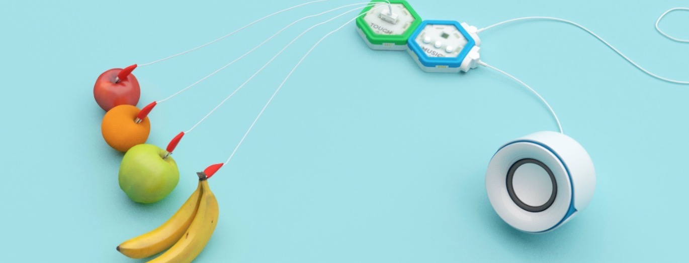

Contents:
How to build Fruit kit the cardboard
How to play with Fruit
How to play a song
How to build a paper drum
Build cardboard music tableware
SOUND EFFECTS mode Play sound
How to coding rhythm by Part-1
How to coding rhythm by Part-2
